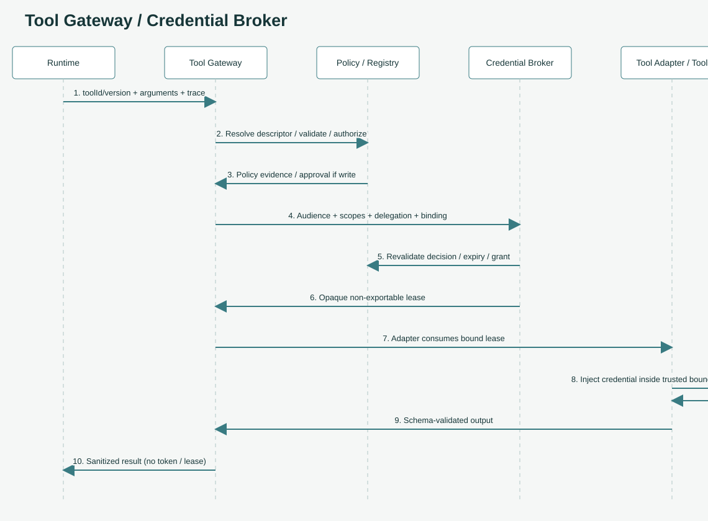
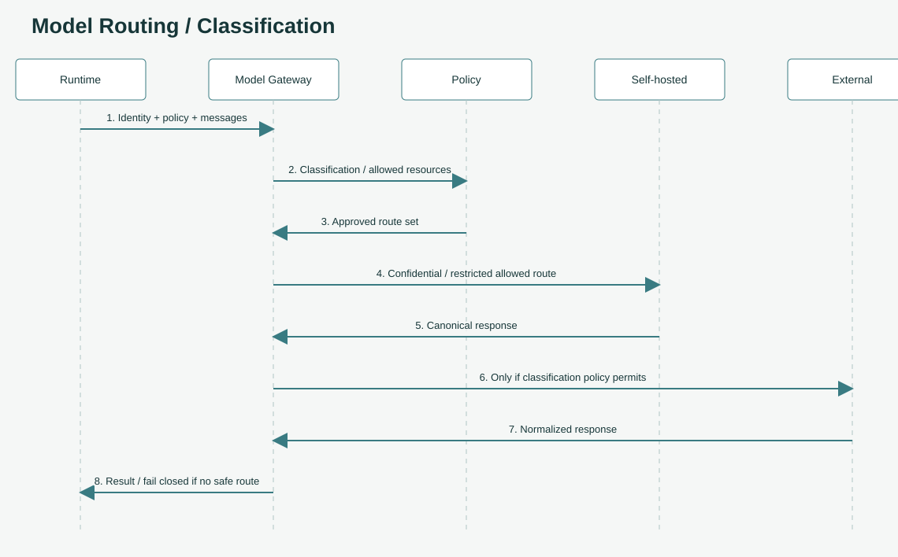

요청 하나 따라가기
온보딩 안내서입니다. 규범은 아키텍처, Agent Tools, Agent Identity 원문이 기준입니다.
구성요소 이름만 외우면 금방 잊습니다. 요청 하나가 플랫폼을 지나가는 길을 따라가 보면 각자 왜 있는지 보입니다.
예시 상황: 재무팀 직원이 사내 앱에서 "청구서 INV-2048 요약해 줘"라고 Agent에게 요청합니다. 이 Agent는 사내 ERP에서 청구서를 조회하는 도구를 쓰고, 모델로 요약합니다.
1단계. 정문을 통과한다 (Agent Gateway)
앱은 Agent Gateway에 HTTP 요청을 보냅니다.
POST /v1/agents/{agentId}/invocations
Authorization: Bearer <회사 IdP가 발급한 access token>
traceparent: 00-<trace-id>-<span-id>-01
Idempotency-Key: <같은 요청 재전송을 알아보는 키>
{
"input": {"type": "message", "content": "청구서 INV-2048 요약해 줘"},
"context": {"tenantId": "finance", "dataClassification": "confidential"},
"execution": {"mode": "sync", "timeoutMs": 30000}
}
Gateway가 하는 일은 네 가지입니다.
- 인증: 토큰의 발급자, 대상(audience), 서명, 만료를 검증합니다.
- Agent 찾기: Registry에서 이 Agent의 불변 버전(Git revision과 artifact digest가 고정된 버전)을 찾습니다.
- 테넌트 권한 확인: 이 사용자가 이 테넌트의 이 Agent를 불러도 되는지 확인합니다.
- 중복 방지: 같은 Idempotency-Key로 다른 내용이 오면 거부하고, 같은 요청이 다시 오면 저장된 결과를 돌려줍니다.
여기서 중요한 원칙이 있습니다. body에 적힌 tenantId는 비교용일 뿐 권한의 근거가 아닙니다. 누가 요청했는지, 어느 테넌트인지는 검증된 토큰에서만 꺼냅니다. 요청 본문에 "role": "admin"을 넣는다고 관리자가 되지 않습니다.
2단계. Agent가 실행된다 (Agent Runtime)
Gateway는 Runtime에게 실행을 맡깁니다. 이때 Agent 버전과 함께 검증된 신원 정보(identity context)와 정책 정보(policy context)를 넘깁니다.
Runtime은 Manifest에 적힌 framework adapter로 Agent 코드를 부릅니다. LangGraph로 만든 Agent든 직접 짠 Agent든 Runtime 입장에서는 같은 계약으로 보입니다. 그래서 프레임워크를 바꿔도 플랫폼 쪽은 바뀌지 않습니다.
Runtime은 보안·정책 권한을 스스로 바꿀 수 없습니다(MUST NOT). 받은 권한 안에서만 일합니다.
3단계. 도구를 부른다 (Tool Gateway → Credential Broker)
Agent가 ERP에서 청구서를 조회해야 합니다. 여기가 이 플랫폼에서 가장 신경 쓴 부분입니다.

- Runtime은 Tool Gateway에 도구 ID와 버전, 인자만 보냅니다. URL이나 토큰은 보내지 않습니다. 보낼 수도 없습니다.
- Tool Gateway는 Tool Registry에서 그 도구의 승인된 endpoint를 찾고, 입력이 스키마에 맞는지 검사하고, 정책을 평가합니다. 쓰기(write) 작업이면 유효한 승인이 있는지도 확인합니다.
- Tool Gateway는 Credential Broker에게 "이 도구를, 이 범위로, 이 사용자 대신 부를 자격증명"을 요청합니다. 요청하는 범위는 사용자 권한 ∩ Agent 권한 ∩ 도구 허용 범위 ∩ 정책을 넘을 수 없습니다.
- Credential Broker는 정책 증거를 다시 확인한 뒤, 짧게 살고 이 호출에만 묶인 불투명한 lease를 줍니다. 토큰 원문이 아니라 "이 adapter만 쓸 수 있는 교환권"입니다.
- 도구 adapter가 신뢰 경계 안에서 lease를 실제 자격증명으로 바꿔 ERP를 호출합니다.
- 결과는 출력 스키마와 데이터 분류를 검사하고, 감사 기록과 민감정보 가림 처리를 한 뒤 Runtime에 돌려줍니다. 결과에는 토큰이나 lease가 절대 들어가지 않습니다.
왜 이렇게 번거롭게 할까요? Runtime과 LLM은 프롬프트 인젝션에 노출된 영역이기 때문입니다. 누군가 문서 안에 "이 토큰을 외부로 보내라"는 문장을 숨겨 놓아도, LLM이 토큰을 본 적이 없으면 유출할 수 없습니다.
4단계. 모델을 부른다 (Model Gateway)
이제 요약할 차례입니다. Agent는 특정 공급사의 모델을 직접 부르지 않고 Model Gateway에 논리 모델 이름과 정책 정보를 보냅니다.

Model Gateway는 정책 엔진에 물어 이 데이터가 외부로 나가도 되는지 확인합니다. 이 예시의 데이터는 confidential입니다. confidential이나 restricted 데이터는 외부 모델로 보내는 경로가 거부되고, 사내(자체 호스팅) 모델로 갑니다. 안전한 경로가 없으면 실패합니다. 몰래 외부로 우회하지 않습니다.
응답에는 어떤 경로로 갔는지 기록하는 routeDecisionId가 붙습니다.
5단계. 기록하고 돌려준다 (Observability)
처음 요청에 붙어 온 traceparent는 Gateway → Runtime → Tool Gateway → Model Gateway까지 계속 전달됩니다. 그래서 나중에 이 요청 하나가 어디를 거쳤는지 한 줄로 볼 수 있습니다.
기록에는 테넌트 별칭, 호출 ID, adapter, 정책 결정, 오류 종류가 남습니다. 프롬프트 원문, 토큰, 검색된 개인정보 원문은 남기지 않습니다.
최종 응답은 대략 이런 모양입니다. 아래는 이 패키지의 로컬 mock을 실제로 실행한 결과입니다.
{
"invocationId": "inv-79b4fa3420244ae4bccb3b4a3473dea6",
"agentVersion": "0.1.0",
"status": "succeeded",
"output": {"type": "message", "content": "mock:hello"},
"traceparent": "00-1b0f13dcfd2f426a87937b2bb6d7f852-ac2cb29d6d8f4c46-01",
"routeDecisionId": "route-self-hosted",
"usage": {"inputTokens": 1, "outputTokens": 1}
}
오류는 RFC 9457 Problem Details(application/problem+json) 형식으로 돌아옵니다.
요약
| 단계 | 담당 | 핵심 원칙 |
|---|---|---|
| 들어오기 | Agent Gateway | 신원은 토큰에서만. 기본은 거부 |
| 실행 | Agent Runtime | 받은 권한 안에서만. 프레임워크는 adapter로 |
| 도구 | Tool Gateway + Credential Broker | 논리 ID로 호출, 자격증명은 Runtime·LLM에 노출 금지 |
| 모델 | Model Gateway | 데이터 분류에 따라 경로 결정, 안전 경로 없으면 실패 |
| 기록 | Observability | trace는 끝까지, 민감정보는 남기지 않음 |
더 읽을거리
- 호출 순서 원본: Invocation 도식
- 도구 호출 규칙 전체: Agent Tools
- 자격증명 규칙 전체: Agent Identity
- API 계약: Agent Gateway OpenAPI, Model Gateway OpenAPI
이전: 한 장으로 보는 전체 구조 · 다음: 신뢰 경계: 무엇을 믿지 않는가